← 返回阅读库 · 原论文目录
论文讲解阅读文档 · 新模型 · v069
NeRF in the Wild NeRF for Unconstrained Photo Collections[2008.02268]
视频时长 00:17:06；讲解文字 6,811 字符；提取讲解画面 35 张。按视频原顺序阅读，每段文字保留时间戳。
文字来自整段视频的自动语音转写，按自然停顿分段，并与 PPT / 论文页面 / 演示画面对齐。未将讲解压缩为摘要；术语、数字和口述公式请结合画面及原论文核对。 阅读稿已校正规范部分明确术语误识别；原始逐字稿和每处修改记录另行保留。
讲解画面为源视频截图（640×360），不是可编辑 PPT 文件。全片按每秒 2 帧扫描内容变化，逐步展开页保留；连续动画保留代表画面。清晰度受源视频限制。
下载完整资料包 · 含离线 HTML、PDF、Word、全部 PPT 画面和字幕。
原论文与材料
NeRF in the Wild: Neural Radiance Fields for Unconstrained Photo Collections · 下载完整 PDF（15 页）
按时间阅读
00:00:00–00:00:21 · 画面 001
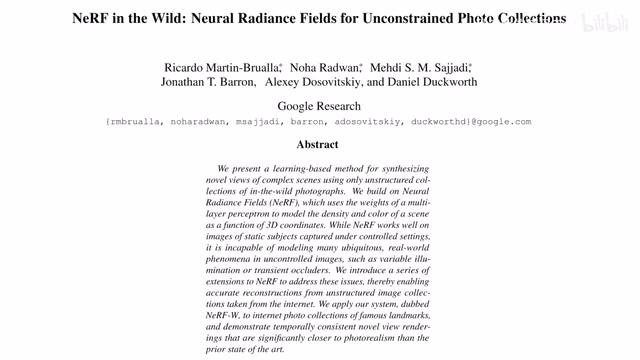
00:00:00–00:00:21 · 画面 001大家好 今天我们来快速说一篇论文 Nerf in the Wild Neural Radiance Fields for Unconstrained Photo Collections 这篇论文你看到它标题也写了就是把这个 Nerf 拓展到野外的这些网络上收集的这些乱七八糟的各种图片上做这种尺度的 Nerf 下面我们直接来看既然我们的数据是从网络上收集来的
00:00:21–00:01:47 · 画面 002
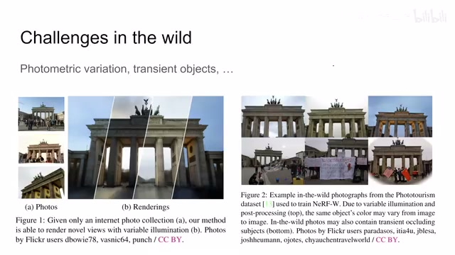
00:00:21–00:01:47 · 画面 002那肯定它会包含很多的挑战那比如说呢对吧从网上收集的图片它拍的时候都不一样天气也不一样这个就导致了你看到的图片的颜色是不一样的都在变化的同时呢你一个建筑前面对吧每天都有不同的游客过来合影每张图片前面呢你这个建筑可能会被不同的人不同的东西遮挡那这样子呢就违背了 NERF 一开始的这个假设在一个固定的场景里这样一个假设所以呢，本文主要就是针对这两种挑战来设计了相应的模块，对这个网络进行改进。那么当然你说啊，我从网络上收集的图片对吧？我首先第一步要跑 nerf 的第一步就是这个 camera parameters，就是每一个相机的这个位置它 fov 这些东西乱七八糟的这些东西我怎么知道呢
这些呢不是这篇文章讨论的重点那如果想关注这方面的问题在很早很早以前有一篇叫这个 Building Rome in a Day 在一天建成罗马那篇论文呢是大规模大尺度的网络上尺度的这个图片来做这个 structure from motion那就是三维重建嘛，这些东西大家就可以把相机参数这些东西一并估计出来。那这个呢就不在这篇论文的讨论范围里了。那么这篇论文呢就是默认啊，我所有的相机的这个参数位置都是已知的，跟这个 NERF 呢是一样的。好的，那么下面我们就来看这个作者怎么来克服这个首先颜色的变化还有遮挡物体的这个问题
00:01:47–00:01:49 · 画面 003
00:01:47–00:01:49 · 画面 00300:01:49–00:01:52 · 画面 004
00:01:49–00:01:52 · 画面 004其实非常简单，我们首先来看这个颜色的变化。那么既然我们已经知道了每个图的颜色出来的这个效果呢，可能跟他拍的这个天气啊，时间等等的这个都有影响对吧？那么干脆我们就把它作为一个条件。那这里呢做这就是说我就
00:01:52–00:03:52 · 画面 005
00:01:52–00:03:52 · 画面 005分配一个这个 vector，用这个 vector 这个 appearance embedding 就是这个 LA，用它呢来描述这张照片它拍摄时候的那些那些把握什么属性，就是一种它的颜色的风格。那么有了它之后呢，我们只需要把它作为条件加入到我们生成真正颜色的过程就可以了。那这里呢我们来看到这是我们照片经过 nerf 这套流程最终合成出来的图像的像素点的颜色，这个是针对第一张图像生成的颜色，这个 R 就是这个光线嘛。然后呢，他把这个渲染的这个流程就是这个体积渲染的这个流程叫做这个 capital R 啊。这个流程他就跟这个传统的 nerf 一样，我们如果沿着一条线去渲染这个 R 他需要什么呢？需要一个线的信息，那本质上就是空间中 XYZ 的这个信息加上他这个观察的这个方向嘛。那这些呢跟原装的 nerf 是一样的。那关键呢就在于这个颜色这一块
颜色这块出来呢，它也是一样 MLP 出来，只不过这个 MLP 呢它是把这个图像的这个 appearance 这个东西来考虑进来的，也作为一个输入的这个呢就是它核心的不同。当然剩下的是什么呢？你看这个 Z 呢是上一个 MLP 的输出这个 gamma d 呢里面的这个 d 呢就是我们的这个观察的角度，gamma d 呢就是一种位置编码，比如说 cos3 交替这种位置编码。那这个呢就是这个 mlp 啊，本质上就是一个 mlp 多考虑了一下这个图片的信息啊，就是这个位置这是怎么生成颜色。那么第一个 mlp 呢跟我们一开始的这个 nerf 是一样的对吧？这个 zt 是怎么来的对不对？这是第一个 mlp 啊，在这里
它是根据 XYZ 的信息然后呢编号码对吧，然后呢送到这个 MLP 里面。但是这个点位的这个 density 就是这个体密度或者叫应该叫不透明度对吧，它是不跟你的这个浏览方向变化的，这是它的一个假设嘛。所以呢，这个地方呢就是所以它呢就是直接从第一个这个 MLP 里面出来了，这个 ZT 呢用在下面这个 MLP 这都是标准的这个 NERF 的流程
00:03:52–00:04:30 · 画面 006
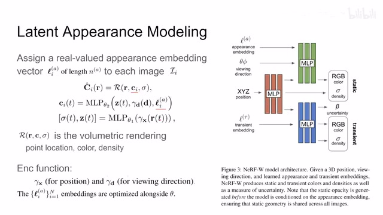
00:03:52–00:04:30 · 画面 006唯一的区别就是这个 MLP 第二个 MLP 多了这个 appearance vector 那这个 vector 你把它当成一个 embedding 然后一块随着优化去优化就可以了那么这样设计的一个好处呢就是你看到我们的这个 appearance 这个 embedding 它只会影响到颜色的输出也就是说我的这个图像的这个 density 渲染时候这个 density 是不受这个图片拍照的影响的
00:04:30–00:05:41 · 画面 007
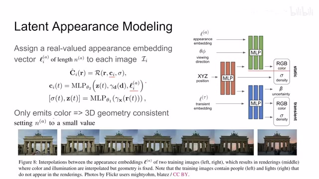
00:04:30–00:05:41 · 画面 007对吧你就想吧那我从不同时刻拍这个东西那这个东西的形状还是这样这还是这个样子只不过我看起来它的颜色不一样所以没有必要让这个 appearance 影响到这个 density也就是这个本质上也就是这个物体的这个三维几合的这种形状同时呢你如果把这个 appearance vector 它的长度呢设成一个比较小的值那这里呢你可以看到作者给我们展示了我们有两个 tunny sample对吧那么你训练好了之后呢你完全可以通过差值这个 appearance vector 的方式通过更改这个 appearance embedding
能够差值让这个画风从这边这个方向转移到这边这个方向是一个很有意思的结果那么这个就是作者怎么样解决在颜色上我们每一张相机出来的颜色风格不一样拍照的时间不一样等等那本质上就是 condition appearance embedding然后这个 appearance embedding而这个 embedding 是 learnable 的那么下面我们继续往下看就要解决这个
00:05:41–00:06:06 · 画面 008
00:05:41–00:06:06 · 画面 008临时出现在前面的这个遮挡的这个物体的这个问题了也就是这个 transient objects那它呢我们首先想到了在前面遮挡了一个物体它肯定就导致了我们这个环境中首先你的颜色跟这个原来的是不一样的这个背景的密度呢跟原来也肯定也是不一样的那么既然都不一样对吧那我就直接多一个网络的结构对吧多一个这个 transient head 用它呢来预测一下我的前景的物体它的颜色它的 density 是什么样的就可以了对吧那这个是第一步那同时呢作者还有一个分支用来预测它的这个 uncertainty 就是我怎么确定当前拍的这张图像它是接近我们的想要的这个干净的背景这个程度是多少这个呢我们下一页这个 size 马上讲我们先来关注一下它这个 transient head
00:06:06–00:06:07 · 画面 009
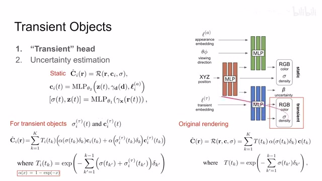
00:06:06–00:06:07 · 画面 00900:06:07–00:08:07 · 画面 010
00:06:07–00:08:07 · 画面 010那么下面我们来看有了这个对前景的这个临时出现的这些物体的颜色和密度的预测我们怎么来用呢首先这个回顾一下这是我们对于这个静态物体的我给你它空间中的这个颜色密度还有这个特定的这个观察方向我来渲染出一个颜色来那它原始的渲染过程呢我们看到这边那我们就沿着这条射线查过去嘛这个 k 就是这个射线上的点然后呢去查这个点的位置上的颜色是多少它呢有多少的这个 density能够多大程度的影响我们在这个光的这个通过的量或者叫光的衰减的量对吧然后前面是前面累积的这些光的衰减，就是在这个就是在这个位置之前的光，
已经被之前的这些东西遮挡了多少，那这个α呢是这个式子的一个缩写啊，这个是一个标准的一个 nerf 的流程，那现在呢我们看到这个网络上，我不仅有一个针对近物的，针对这个背景建筑的这么一套颜色和密度，同时呢我对于每张图片来说，我还有一个针对它的前景物体的，这么一个颜色和密度，那么我们在渲染的时候应该怎么处理呢，还是照常处理对吧，只不过区别就是我在经过这个 k 个点的时候，原来是每 k 个点只有一套这个 rgb，一套这个 density那现在呢我要考虑前景和背景，前段一步就是两套 rgb，
两套 density 加进来就好了，那你可以看到这里呢，就是啊它的这个渲染流程是这样的，首先前面这部分对吧，就跟原始的一样这个是静态的
00:08:07–00:08:16 · 画面 011
00:08:07–00:08:16 · 画面 011然后呢我只需要把我针对这张图像动态的部分，比如说这个 rgb这里的这个 RGB 这个 Density 这里出来这个 Density 加进来也就行了就相当于我原来只有一个图层我就又叠了一层前景的这个图层一样算对吧采样的点还是那些位置只不过你现在每个点位置上有两个 RGB 有两个透明度本质的算法还是一样的就是你一样能够正常算差分算 T 度对吧这是一个很简单的就直接合起来就好了，
00:08:16–00:08:36 · 画面 012
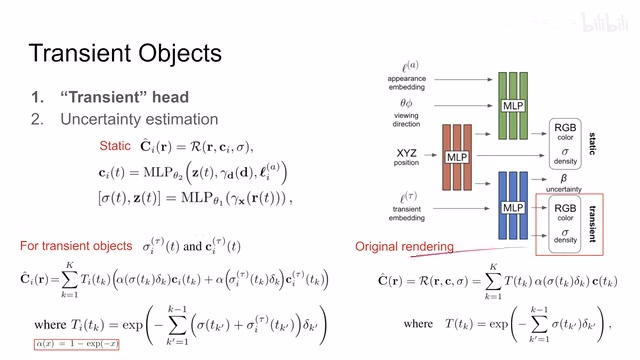
00:08:16–00:08:36 · 画面 01200:08:36–00:08:38 · 画面 013
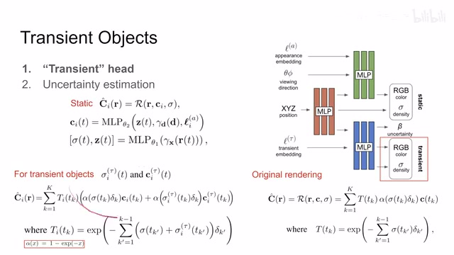
00:08:36–00:08:38 · 画面 01300:08:38–00:08:41 · 画面 014
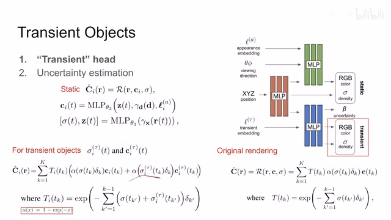
00:08:38–00:08:41 · 画面 014但是我们希望整个网络能够在这些很多张图像中找到一个共同的静态的背景而不是说每张图像他偷懒的话每张图像都说这个是前景物体不管你前景背景都说前景物体这都是前景物体对吧那这样子是不行的那么为了限制整个网络他不要走的太离谱为了限制让所有的图片，
00:08:41–00:08:44 · 画面 015
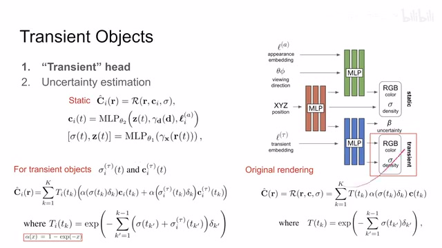
00:08:41–00:08:44 · 画面 01500:08:44–00:09:06 · 画面 016
00:08:44–00:09:06 · 画面 016都能够达成一种共识啊这里呢作者还预测了一个这个 uncertainty 啊他用了这个 base learning framework 用他预测一个 uncertainty 用他呢来约束一下我们的这个整个这个网络不要走得太离谱是吧大家多找共识对吧少尽量是少出这些意外的这种情况啊那我下面我们来看这个 uncertainty 是怎么处理的，
00:09:06–00:11:06 · 画面 017
00:09:06–00:11:06 · 画面 017那么这里作者首先一个建模他认为说我这个图片实际的观测到这个颜色它可以被认为是从一个 normal distribution 中采样出来的那么这个 normal distribution 它有它自己的均值和方差是受具体的图像还有你具体看的是哪一条光束来影响的你想有的图像有遮挡有的图像没遮挡，对吧这就是 image dependent 有的图像呢一半部分被遮挡了有一部分被遮挡了对吧另一部分没有啊这个是 ray dependent 啊很好理解然后呢我们怎么去估计这个 uncertainty 啊作者呢说也是啊我在空间中的每一个点每一个位置那根据这个点的位置啊我可以估算出一个 uncertainty 来然后呢我沿着整个这条射线把所有的这个 uncertainty 给它累加起来，
那这个样子呢我就把整个这条射线上，这个像素的这个 uncertainty给它包含进来了那也就是这样它本质上呢跟你这个体积渲染，也是一个流程对吧你就把它想象成这个 uncertainty 呢它是另一种像素就是另一个颜色另一种通道只不过原来的 RGB 呢换成了这个 uncertainty那同样的你在这里做体积渲染，做这个积分你就相当于求到了，这一个像素点上的这个 uncertainty也是一种很取巧的假设啊那它的给出的式子呢是这样子的这个式子呢我现在用的呢是它这个 arXiv 上
第三个版本那下面这个本达式呢我摘出来了是 arXiv 上第二个和第一个版本它用的这个本达式那这个 R这个 capital R这个方程展开呢本质上就是体积渲染这个式子嘛对吧本质上就是下面这个积分但是呢唯一一个区别呢就是这个左边的这个结果
00:11:06–00:12:47 · 画面 018
00:11:06–00:12:47 · 画面 018我们如果以第三个版本呢是这个 beta hat有这个小这个尖对吧那这里呢它没有容易跟里面这个积分这个项它混淆这个是我们需要注意的我们就以它第三个版本修改过的版本为准啊那么既然它也是用了一个相同的这个渲染的方式来把整个这个像素的 pipe line 上的这个 uncertainty 找出来那现在我就只需要找出它空间中的每一个点的 uncertainty 就可以了那么我们直接来看这里呢就引入了这个第三个 MLP 那么首先还是这里做的设计的一个 transient embedding 用它呢来表示每个图里面的这些前景的物体跟这个 appearance embedding 呢它的效果呢是一样的然后呢我还是根据这个观察的这个位置
还有这个当前这个 embedding 对吧塞到我们这个 MLP 里面让它呢同时告诉我这个前景物体的这个颜色 density 还有这个 uncertainty 那这里注意呢这三个对吧本质上它只依赖于这个 XYZ 的这个位置还有这个前景图像本身的一个特性它并不依赖我们观察的角度这是一种相对合理的简化那么拿到这样一个原始的这个网络的输出之后呢那像前面这个 density 还有这个 RGB color 呢你就做这个 ReLU 做 sigma 就可以做激活就可以用了那对于这个 uncertainty 呢对吧作者做了一个这样一个 soft plus 这个激活然后呢用这个 hyperparameter 来保证我们最终输出的结果这个 uncertainty 它是一个正数
那么这个 uncertainty 就最终会被用到我们渲染的流程来告诉我们整个这一个像素的 uncertainty 那么下面我们就来看怎么样训练这一个网络它们是同时一起被优化的
00:12:47–00:12:48 · 画面 019
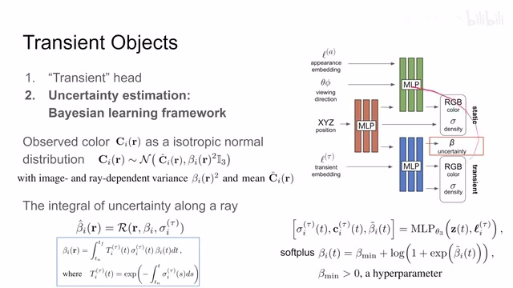
00:12:47–00:12:48 · 画面 01900:12:48–00:12:51 · 画面 020
00:12:48–00:12:51 · 画面 02000:12:51–00:13:22 · 画面 021
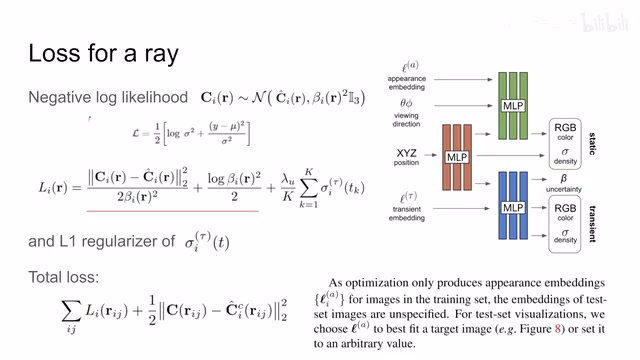
00:12:51–00:13:22 · 画面 021那首先一个 loss 啊，这里呢做的就是这个 NLL，这个 negative log likelihood 对吧？因为我们这是一个这个 normal distribution、Gaussian distribution，它有一个很好的特性呢，就是这个 negative log likelihood 可以写成形如这样的一个形式，那这个形式对我们就非常好用了对吧？我们的这个 mean value 就是我们图像观察出来的每张图像的这个像素的值，我的这个方差就是我们这里说的这个 uncertainty 对吧？你把这个式子
带入到我们相应的值就能得到这两项那你换个角度来说第一项告诉我们当我们的 uncertainty 很大的时候前面的这个像素的差异你就别在意了对吧反正我也不确定它这个像素是不是真的就是这个值那同时呢第二项告诉我们这个 uncertainty 它不能太大你不能总觉得都不确定就白烂对吧那么此外呢作者还加一个 L1 正则项
00:13:22–00:13:23 · 画面 022
00:13:22–00:13:23 · 画面 02200:13:23–00:13:34 · 画面 023
00:13:23–00:13:34 · 画面 02300:13:34–00:13:43 · 画面 024
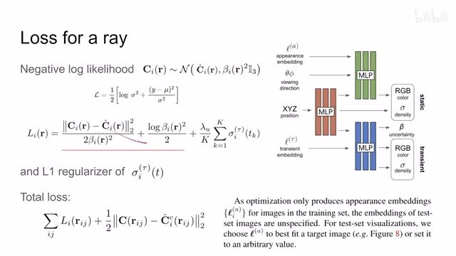
00:13:34–00:13:43 · 画面 02400:13:43–00:13:44 · 画面 025
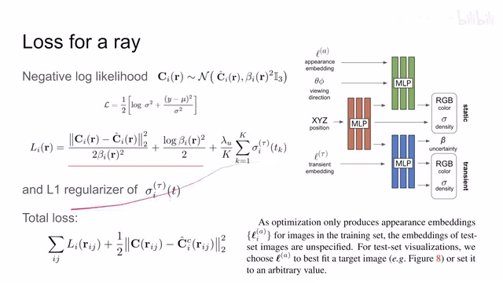
00:13:43–00:13:44 · 画面 025对吧，这个还外的 regulation 它呢是加在这个 density 上面的，也就是说，你的 density 你要限制
00:13:44–00:13:46 · 画面 026
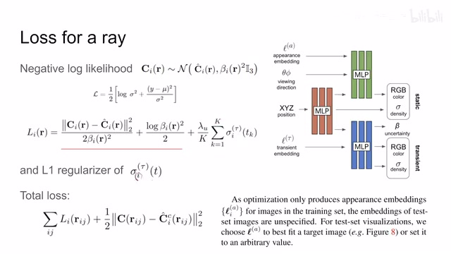
00:13:44–00:13:46 · 画面 02600:13:46–00:13:47 · 画面 027
00:13:46–00:13:47 · 画面 02700:13:47–00:14:08 · 画面 028
00:13:47–00:14:08 · 画面 028不能说总让前景的 density 变得很大还那么还是你前景的 density 变得很大对吧大家就都关注前景了一切行为都让用前景的这个物体来解释了我后面的这个真正想要的这个背景啊这想要的这个建筑就就就没有了对吧所以呢这个是这个 L1 regularization 那么这个 loss 呢就是本文针对这个全种的这个 nerf 在这个前景物体上额外增加了一套 loss
00:14:08–00:14:10 · 画面 029
00:14:08–00:14:10 · 画面 02900:14:10–00:14:23 · 画面 030
00:14:10–00:14:23 · 画面 030那所以呢本文的总 loss 呢就是前面增加的这个 loss 然后呢再加上这个原始的这个那个 nerf 的这个重建的 loss 啊那么是这样子的那么这个呢是他的一个训练过程那么他训练的参数呢就包括这三个 mlp 里面的参数还有这个 appearance embedding 和这个 transient embedding
00:14:23–00:14:26 · 画面 031
00:14:23–00:14:26 · 画面 03100:14:26–00:15:30 · 画面 032
00:14:26–00:15:30 · 画面 032但是一旦你的网络训练好了，你现在想要渲染新的视角的时候，首先你不需要渲染一个有前景图像的视角，那么下面这一块整个这一套网络你就可以舍弃不用了。你只需要保留上面橙色还有绿色这两个网络就可以了，那么渲染的过程中 XYZ 和光看的视角这些都是已知的，但是这个 appearance embedding 我们是不知道的，这里作者说你可以随便给一个值对吧，但是你随便给一个值不能保证说它生出来的画风就是你测试集中真正的图像的画风，怎么办，你也可以根据测试集的图像的样子去选一个这个 appearance embedding 那它能够最好的 match 这个测试级的这个图像的这个风格，那这事儿有朋友就说了，等一下测试级的图像你怎么能用来训练呢对吧
00:15:30–00:16:20 · 画面 033
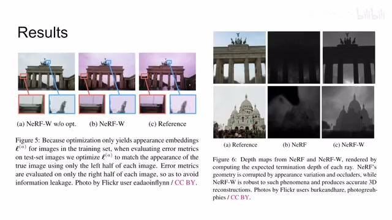
00:15:30–00:16:20 · 画面 033那这个时候作者就说了，我们严谨的来做这个事情，就是我测试级的图像像这个测试级的图像对吧，我分成两半，我拿左边一半用来去调这个 appearance vectorappearance embedding，让他调的这个图片合适了，合适了之后呢，然后呢我再去用另一半去评估，说我这个图像的这个复原出来的这个质量就是你看这个图假如说我没有调这个 appearance embedding 它出来的图可能是这个画风的跟你这个 Ground Truth 相差甚远那怎么办呢我拿左半边这个图像来调一下调出一个合适的直来然后呢再跟右边对比那就很接近了那这个呢是本文的这个实验的这个方法那当然了像这个后面有一些展示啊结果的展示比如说这个深度的估计那么还有呢这边这个图展示了这个它的这个
00:16:20–00:17:05 · 画面 034
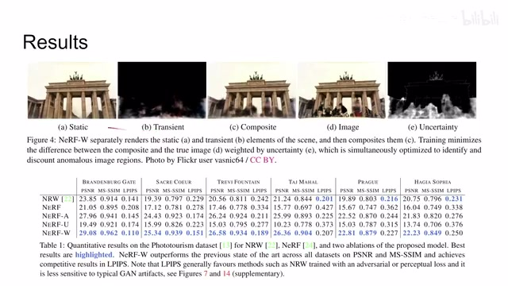
00:16:20–00:17:05 · 画面 034恢复出来的这个情况，然后呢前面认为是前景的这个物体如果在一起渲染出来会是什么样子的，这是实际的这个图像，这是那个不确定度对吧，可以看到呢都是能够达到他宣称的这些目的，那下面呢一些美好的数字对吧，不同的数据集，那总的来说呢，这篇是一个挺有意思的通过更改这个模型的设计让他能够兼容不同的各种各样的图像来共同把我们的同一个静态的场景给他建出来，同时呢也可以让这个模型生成不同的画风是一个挺有意思的一个设计好的，那么以上就是我对这个文章的一个快速的一个整理，那么感谢您的收看，再见
00:17:05–00:17:06 · 画面 035
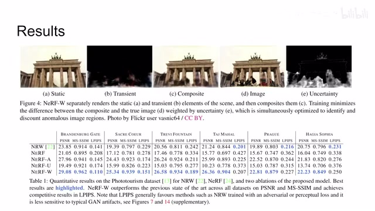
00:17:05–00:17:06 · 画面 035转写与来源说明 · 21 个自动复核提示
保留 181 个原始语音片段，21 个片段触发自动复核提示。提示仅用于定位可能的术语、重复或识别问题，不等于已确认错误。
讲解画面为源视频截图（640×360），不是可编辑 PPT 文件。全片按每秒 2 帧扫描内容变化，逐步展开页保留；连续动画保留代表画面。清晰度受源视频限制。
原视频：paper/合集_2026-10-16_新模型/[论文简析]NeRF in the Wild NeRF for Unconstrained Photo Collections[2008.02268].mp4
SHA-256：74e2446508fcc285805a72b6678d10b4a036b8f9154066a4b909fa4e205441a0
appearance embedding
然后这个 appearance embedding
就要解决这个
临时出现在前面的
这个遮挡的
这个物体的这个问题了
也就是这个 transient objects
那它呢
我们首先想到了
在前面遮挡了一个物体
它肯定就导致了
我们这个环境中
首先你的颜色
跟这个原来的是不一样的
这个背景的密度呢
跟原来也肯定也是不一样的
那么既然都不一样
对吧
那我就直接
多一个网络的结构
这个 uncertainty 呢
全文按视频语音与画面制作。原论文可从上方链接下载；完整资料包保留全文、原始逐字稿、字幕和校对记录。